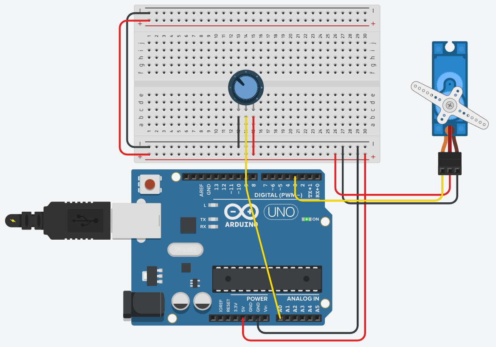

Sluit een potentiometer en een servomotor aan, en zorg dat de hoek van de servo meedraait met de knop. Draai je de potentiometer helemaal naar links, dan staat de as op 0 graden. Helemaal naar rechts is 180 graden.
Dit is je eerste motor in de cursus, en meteen de eenvoudigste. Een servo neemt een hoek aan die jij hem opgeeft, en de elektronica in de servo doet de rest. Hoe dat werkt, welke drie draden eraan zitten en waarom de bibliotheek de pulsen voor jou maakt, staat op De servomotor. Lees die pagina door voor je begint.

De potentiometer hangt als spanningsdeler tussen 5 V en GND, met de loper op A0. De servo krijgt zijn voeding van de 5 V van de Arduino, en zijn stuurdraad gaat naar pin 9.
Het mag elke digitale pin zijn, want de Servo-bibliotheek maakt de pulsen zelf en heeft geen ~-pin nodig. Pin 9 is de pin die op dit schema gebruikt wordt. Onthoud wel het omgekeerde. Zodra er een servo actief is, werkt analogWrite() niet meer op pin 9 en pin 10.
Je leest de potentiometer uit met analogRead(), en dat geeft je een getal tussen 0 en 1023. De servo wil een hoek tussen 0 en 180. Die twee bereiken passen niet op elkaar, dus moet je herschalen.
Daar heb je in labo 2 een functie voor gezien die dit doet: map(). Reken het niet met de hand uit.
Sla je oefening op.
Overloop volgende checklist om je oefening zelf te evalueren:
De hele oefening past in vier regels loop(): uitlezen, herschalen, schrijven, wachten.
Zonder die delay(15) op het einde stuur je de servo honderden keren per seconde een nieuwe hoek, ook als je de knop niet aanraakt, en dan begint hij te trillen op de kleine schommelingen van de meting. Vijftien milliseconden is ongeveer de tijd die de as nodig heeft om één graad af te leggen.
#include <Servo.h>
Servo mijnServo;
const int servoPin = 9;
const int potPin = A0;
void setup()
{
mijnServo.attach(servoPin);
}
void loop()
{
int potWaarde = analogRead(potPin); // 0 tot 1023
// herschaal naar het bereik van de servo
int hoek = map(potWaarde, 0, 1023, 0, 180);
mijnServo.write(hoek);
delay(15); // geef de as de tijd om te volgen
}